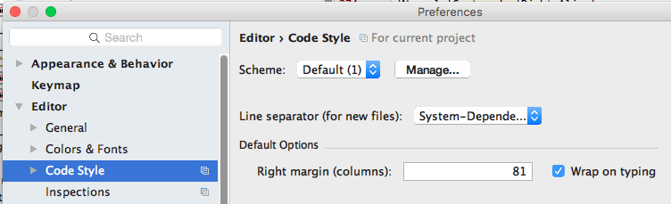

Contents
- Introduction
- Prerequisites
- Content Basics
- Structuring Content
- Sentences and Paragraphs
- For Further Reading
Introduction
This section provides a summary of Markdown that you will frequently utilize. The Markdown format utilized is GFM or GitHub Flavored Markdown.
Please note that your Squirrel U content should only be utilizing Markdown as opposed to embedding other languages such as HTML. This will help maintain styling and consistency throughout the site.
Prerequisites
- None
Content Basics
Italics
Use single asterisk (*) or underscore (_) characters around content which you would like to render in italics.
Markdown:
*italics* or _italics_
Renders into:
italics or italics
Bold
Use double asterisks (*) around content which you would like to render in bold.
Markdown:
**bold**
Renders into:
bold
Links
You can include links in your documentation in two ways:
-
Display the address as an actionable link for the user to click on.
Markdown:
<https://www.google.com>Renders into:
-
Display a description that takes the user to an actionable link.
Markdown:
[Click here to go to Google](https://www.google.com)Renders into:
At this time, it is generally preferred that you avoid linking to other Squirrel U documents as movement of content will make these references more brittle over time resulting in broken links.
If you move a content module within Squirrel U via refactoring, make sure that you check the references option and any referenced links will be adjusted.
Links are relative to the basepath. You do not need to include this basepath in your links!
Images
- Images must be in .png format (with lowercase "png" file extension)
- Images must be named with a title that summarizes the content (i.e. "GenericFlower.png", not "2016-06-06_15-31-47.png")
- In almost all cases, format images with centering and shadow by adding {: .image} after the image link (exceptions can be discussed with the Pull Request approver on a case-by-case basis)
Include images in your file using the following syntax, where the path in parentheses ( ) is the relative location of the image (See Image Path below for more information on this).
Markdown:
{: .image}
Renders into:

Image Path
There are two ways of placing Markdown files which will influence how you specify your image paths. Please make sure that you understand this! If you are creating new image directories, please review the Project Structure section for more guidance on which of these structures to use.
-
Directory (i.e. 1_MyModule) containing index.md file and images dir
Use a direct reference:
 -
Named Markdown file (ie 1_MyModule.md) with peer images directory
Use a parent directory reference,

Emojis
You can insert emojis by using the syntax:
:emojiname:
NOTE: If you are using an Emoji within an HTML "include" file into your Markdown files, these will properly render in your local environment. However the latest Enterprise GitHub version does not yet have the latest Gems incorporated. Emojis will work if directly specified in a Markdown file. 
Structuring Content
Headers
Use an increasing number of hash characters (#) to create headers for each logical section in organizing your content.
Markdown:
# Header 1
## Header 2
### Header 3
#### Header 4
##### Header 5
Renders into:
Header 1
Header 2
Header 3
Header 4
Header 5
Headers are used to automatically generate a table of contents for each page. Five levels of headers are supported in Markdown.
Prudent Usage of Headers
To keep a page's Table of Contents compact, please be careful in usage of headers. It is recommended that you keep to no more than 3 headers deep.
Excluding Headers from the Table of Contents
To exclude a Header from being included in the TOC, place a {:.no_toc} tag after the header that you want excluded:
## Header 2
{:.no_toc}
Lists
Unordered Lists
Use an asterisk (*) character at the beginning of a line to create a bulleted list. By using indentation, you can change bullet style.
NOTE: make sure that you put a blank line in between a sentence and a list to ensure that the list renders correctly.
Markdown:
* Item 1
* Item 2
* Item 2a
* Item 2b
Renders into:
- Item 1
- Item 2
- Item 2a
- Item 2b
Ordered Lists
Use a numeric character followed by a period (.) at the beginning of lines to create ordered lists. Can combine with unordered lists.
NOTE: make sure that you put a blank line in between a sentence and a list to ensure that the list renders correctly.
Markdown:
1. Item 1
2. Item 2
* Item 2a
* Item 2b
Renders into:
- Item 1
- Item 2
- Item 2a
- Item 2b
Tables
Use pipe characters (|) to separate columns, using a beginning and ending pipe. Your first row is always a header row, preceded by a row of dashes (must be at least 3 dashes for each column), followed by your data rows. You can align your columns for easier reading, but they don't have to be pretty in order to render.
If your table is too large to fit on the screen, add the {: .largeTable} tag to decrease font size.
*Markdown:
| Table | Header | Row |
|-------|--------|------|
|Col 1 |Col 2 |Col 3 |
|Col 1a |Col 2a |Col 3a|
Renders into:
| Table | Header | Row |
|---|---|---|
| Col 1 | Col 2 | Col 3 |
| Col 1a | Col 2a | Col 3a |
Column Alignment
You can also use colons (:)s to right-align or center columns.
Markdown:
| Table | Header | Row |
|-------|:--------:|----------:|
|Normal |Centered |Right Align|
|Col 1 |Col 2 |Col 3 |
|Col 1a |Col 2a |Col 3a |
Renders into:
| Table | Header | Row |
|---|---|---|
| Normal | Centered | Right Align |
| Col 1 | Col 2 | Col 3 |
| Col 1a | Col 2a | Col 3a |
Sentences and Paragraphs
Line Width
The site style depends on an 80 character line width for best presentation. If you are using IntelliJ to generate content, it is recommended that you set the right margin as 81 and "Wrap on Typing" by going to Preferences or Settings and then Editor->Code Style, Right margin (columns):

Whitespace and Line Breaks
While you may be used to using whitespace to indent and organize your documentation, you don't need to do that with Markdown. Utilize Headers and various emphasis tags to organize your content.
Spaces are very important in processing many Markdown constructs. Usually you will need to prefix with 3 spaces. If you put too few in or too many, the Markdown will not be processed correctly.
It is also important that you put line breaks between content text and Markdown constructs. If you see content jammed up to a Markdown rendering or Markdown not processing correctly, chances are that you need to add whitespace in the form of a Line Break. For example you'll need to include such empty lines before tables and lists.
Enter a manual line break by ending a line with two or more spaces.
Block Quotes
Use a greater than sign (>) at the beginning of each line that you would like to be displayed in a block or box.
Markdown:
Someone once said:
> One, two buckle my shoe
> Three, four shut the door
Renders into:
Someone once said:
One, two buckle my shoe
Three, four shut the door
Coding Examples
In Squirrel U, you'll likely want to display HTML, JavaScript, JSON, Groovy, Java, SQL and shell script code.
Utilize 3 backticks (`) to fence code blocks, specifying a language for formatting style. Squirrel U utilizes an 80 character margin, so please ensure that your code examples are well within this margin limit.
Make your code readable by keeping { contained on the same line as a function or conditional. Keep your examples and comments short by simplifying the way you say things. Make your code inherently readable by using descriptive variable and function names and using accepted coding standards as described within Squirrel U.
HINT: Make sure that you start your fencing in the very first column!
Examples
Supported syntaxes include: HTML, JavaScript, Groovy, Java, JSON, XML, SQL, Shell and many more.
HTML
Markdown

Renders into:
<div>
<img src="/images/Icon.png"/>
</div>
JavaScript
Markdown

Renders into:
(function() {
jQuery(function() {
var baseUrl = document.location.origin;
...
});
}());
Displaying a Code Snippet within a Sentence
Use backtick ` characters around text you want to render as inline code.
Markdown
Inline code sample: `code`
Renders into:
Inline code sample: code
Escape Evaluation
To display code blocks or plain text that is not evaluated as Markdown, fence the text with 3 backtick (`) characters.
Markdown:

Renders into:
This **text** will display *verbatim* as typed.